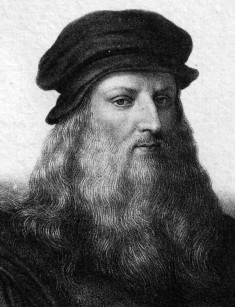

Леонардо да Винчи

Леонардо ди сер Пьеро да Винчи (15 апреля 1452 года - 2 мая 1519 года) - итальянский художник, живописец, скульптор, архитектор, учёный, изобретатель, писатель и музыкант.
Родитель отдал Леонардо в ученики тосканскому мастеру Андреа Верроккьо. За время обучения у наставника сын Пьеро постиг не только искусство живописи и скульптуры. Молодой Леонардо изучил гуманитарные и технические науки, мастерство выделки кожи, основы работы с металлом и химическими реактивами. Все эти знания пригодились да Винчи в жизни. Леонардо получил подтверждение квалификации мастера в возрасте двадцати лет, после чего продолжил работу под началом Верроккьо. Молодой художник привлекался к мелкой работе над картинами своего учителя, например, прописывал фоновые пейзажи и одежду второстепенных персонажей. Собственная мастерская появилась у Леонардо только в 1476 году. «Витрувианский человек» да Винчи Рисунок «Витрувианский человек» Леонардо да Винчи В 1482 году да Винчи был отправлен своим покровителем Лоренцо Медичи в Милан. В этот период художник работал над двумя картинами, которые так и не были завершены. В Милане герцог Лодовико Сфорца зачислил Леонардо в придворный штат в качестве инженера. Высокопоставленную особу интересовали приспособления оборонительного характера и устройства для увеселения двора. У да Винчи появилась возможность развить талант архитектора и способности механика. Его изобретения оказались на порядок лучше тех, что предлагали современники. Инженер пробыл в Милане при герцоге Сфорца около семнадцати лет. За это время Леонардо написал картины «Мадонна в гроте» и «Дама с горностаем», создал свой самый знаменитый рисунок «Витрувианский человек», изготовил глиняную модель конного памятника Франческо Сфорца, расписал стену трапезной доминиканского монастыря композицией «Тайная вечеря», сделал ряд анатомических набросков и чертежей аппаратов. Картина «Мадонна в гроте» Картина «Мадонна в гроте» Инженерный талант Леонардо пригодился ему и после возвращения во Флоренцию в 1499 году. Он устроился на службу к герцогу Чезаре Борджия, который рассчитывал на способности да Винчи к созданию военных механизмов. Инженер проработал во Флоренции около семи лет, после чего снова вернулся в Милан. К тому времени он уже закончил работу над самой известной своей картиной, которая сейчас хранится в музее Лувра. Второй миланский период мастера длился шесть лет, после чего он уехал в Рим. В 1516 году Леонардо отправился во Францию, где и провел свои последние годы. В путешествие мастер взял с собой Франческо Мельци, ученика и главного наследника художественного стиля да Винчи. Франческо Мельци Портрет Франческо Мельци Несмотря на то, что в Риме Леонардо провел всего четыре года, именно в этом городе находится музей его имени. В трех залах учреждения можно ознакомиться с аппаратами, построенными по чертежам Леонардо, рассмотреть копии картин, фото дневников и рукописей. Большую часть своей жизни итальянец посвятил инженерным и архитектурным проектам. Его изобретения имели как военный, так и мирный характер. Леонардо известен, как разработчик прототипов танка, летательного аппарата, самодвижущейся повозки, прожектора, катапульты, велосипеда, парашюта, мобильного моста, пулемета. Некоторые чертежи изобретателя до сих пор остаются загадкой для исследователей.